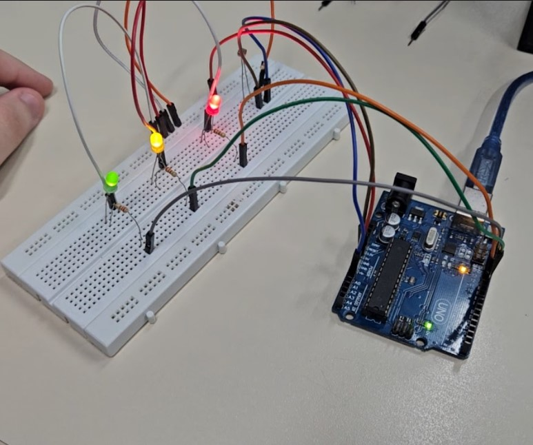
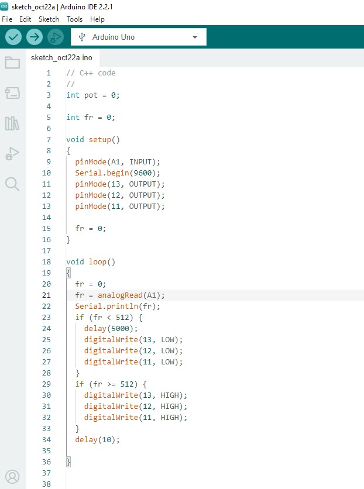
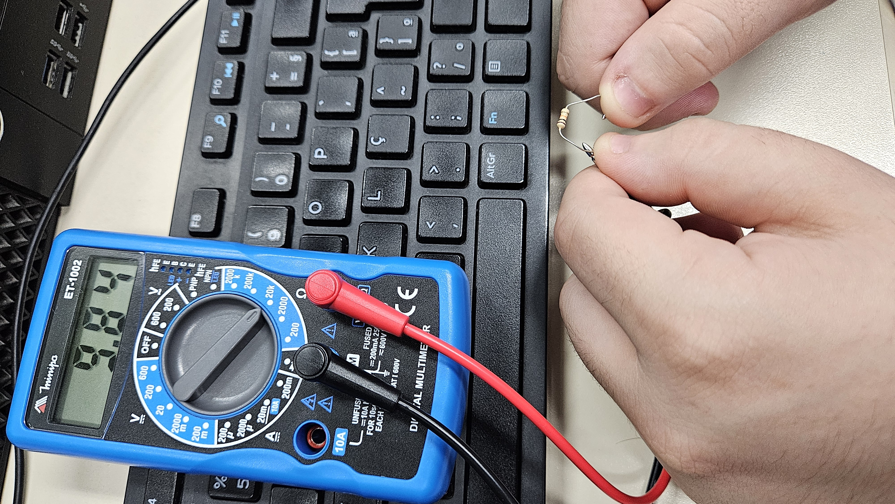
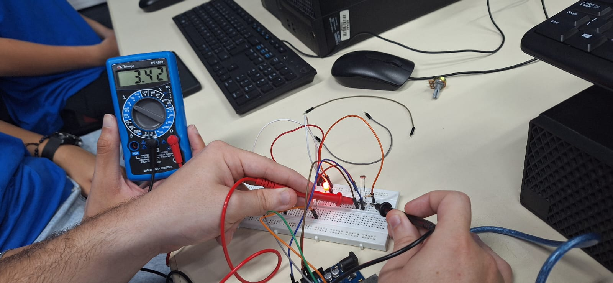

Controle de Iluminação
Foto do LDR com a montágem física no ARDUÍNO (prática)
Fonte: O autor
Print de tela de um exemplo de código C++ no IDE ARDUÌNO
Fonte: O autor
Video da montagem prática
Fotos das medidas realizadas com o multímetro
Medindo a resistência de um resistor de 10k omh
Por ser de 10k (10 mil) ohm, no multímetro utilizamos a medida de 20k para medir a resistência
O valor resultante foi 9840 ohm, mas devido a tolerância da faixa amarela que é de 5% (5 por cento), o valor se encontra dentro desta tolerância.
Fonte: O autor
Medida da Tensão no LDR ligado
Na medição, a tensão foi de 3,42V
Fonte: O autor
Medida da Tensão no LDR desligado
Na medição, a tensão foi de 2,12V
Fonte: O autor